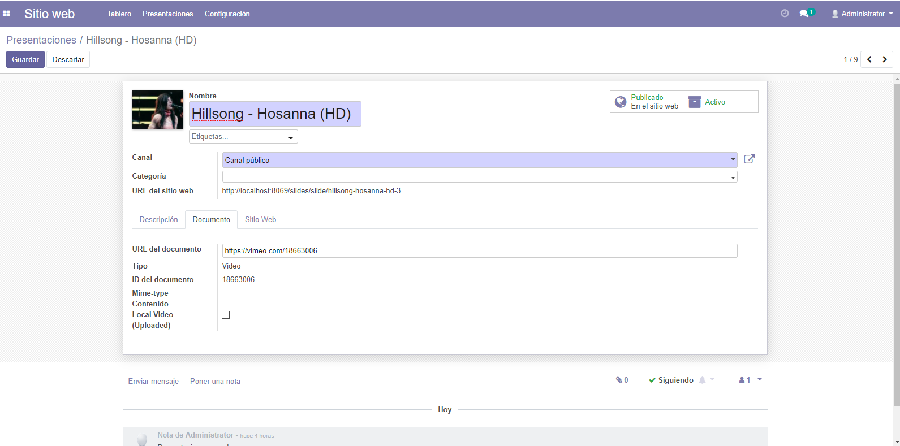
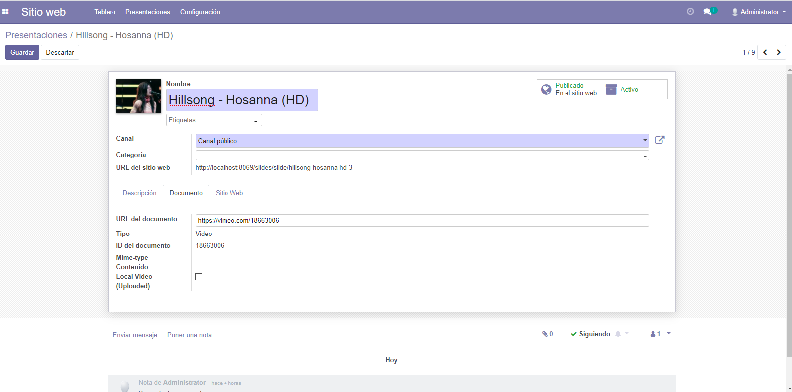

Odoo Website Slides - Local and External Videos Support - website_slides
Now you can embed local uploaded videos, external videos from external storage, Google Drive videos, livestreaming broadcast and Vimeo videos.
Odoo Website Slides by default only allow embed Youtube videos, but now you can take control of videos can you insert in every slide.

Featuring:
- MP4, WEBM, OGG, 3GP, HLS external videos
- Livestreaming origin (m3u8 stream and other supported)
- Support Google Drive Videos
- Support Vimeo Videos
- Support Local Videos: mp4, ogg and webm
 
